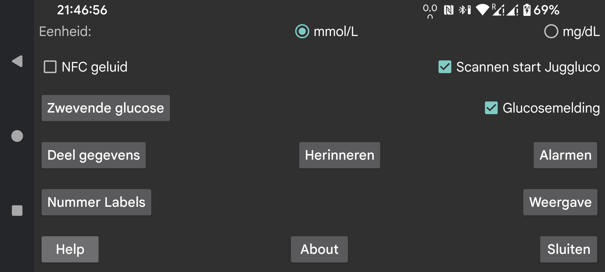

ar be de es fr hi it nl pl pt ru tr uk uz zh en
Geef aan of glucose waarden in mmol/L of mg/dL weergegeven moeten worden.
Maak tijdens het scannen ook geluid, naast vibratie.
Als dit aangevinkt is, en je scant een sensor terwijl Juggluco niet in de voorgrond is, dan zal Juggluco gestart worden. Dit maakt het mogelijk een sensor zelfs te scannen wanneer Juggluco niet weergegeven wordt. Als meerdere apps deze instelling hebben geeft het echter problemen. Bij het scannen wordt dan een keuze schermpje getoond waar je kunt kiezen welke app je wilt gebruiken. Dit werkt echter niet goed. Door dit uit te zetten voor deze app, zorg je er voor dat tenminste een app kan scannen zonder dat het zich in de voorgrond bevind.
Als je root toegang hebt op je smartphone kun hetzelfde doen met Abbott’s Librelink app. Hiervoor moet je root worden in adb shell or termux en het volgende intypen:
pm disable com.freestylelibre.app.nl/com.librelink.app.ui.common.NFCScanActivity
Voor Librelink 2.7.1 of lager moest je het volgende type:
pm disable com.freestylelibre.app.nl/com.librelink.app.ui.common.ScanSensorActivity
Hierna kun je Librelink nog steeds gebruiken wanneer het in de voorgrond is, maar wordt het niet meer gestart, als het niet in de voorgrond is.
Librelink 2.5.2 en hoger crashen zichzelf als ze root ontdekken. Als je Magisk voor root gebruikt, kun je root verbergen voor Librelink via denylist (Magisk 24.3) of Magiskhide (Magisk 23.0). Je moet ook instellen dat Magisk zijn eigen package id veranderd. Het is ook mogelijk een oudere versie van Librelink te gebruiken die nog geen root check heeft.
Een andere oplossing, waar je geen root voor nodig hebt, is de hele Librelink app uit te schakelen met:
adb shell pm disable-user --user 0 com.freestylelibre.app.nl
Voordat je Abbotts klantenservice belt, kun je het weer inschakelen met het volgende commando:
adb shell pm enable com.freestylelibre.app.nl
(Heette vroeger "Glucose op Android statusbalk"). Als dit aanstaat worden stream glucose waarden in een melding en Android statusbalk weergegeven. Bij sommige smartphones wordt dit alleen uitgevoerd wanneer ook Androids melding instellingen gewijzigd worden. Bijvoorbeeld door naar Juggluco app-info in Android instellingen te gaan, op “Meldingen beheren” te drukken, dan glucoseNotification aan te raken en “instellen als stil” uit te zetten. “Weergeven op statusbalk” zal nu aanstaand getoond worden.
Wanneer je dit aanzet, wordt er continue een klein plaatje met de actuele glucosewaarde op het scherm getoond, ongeacht welke app zich in de voorgrond bevind. Als je het de eerste keer inschakelt, wordt je doorverwezen naar een lijst met apps waarin je Juggluco toestemming moet geven over andere apps heen weer te geven.
Hieronder valt alles dat afgaat in Juggluco afhankelijk van de stream glucose waarden ontvangen via Bluetooth: hoog en laag glucose alarmen, signaal verlies alarm, waarde aanwezig melding en glucose in statusbalk.
Verschillende manieren om gegevens van Juggluco naar andere apps of servers te sturen. (Om gegevens naar horloges te sturen, ga naar het linkermenu -> Horloge.)
Specificeer labels voor hoeveelheden. Als gebruikt maakt van de Garmin watch app Kerfstok, worden deze labels ook naar Kerfstok verzonden.
Specificeer een alarm dat afgaat als een bepaalde hoeveelheid (bv eten of medicatie) niet ingevoerd is binnen een bepaalde tijdsperiode.
Scan de datamatrix op de Sibionics-sensorverpakking en op de Dexcom G7/ONE+-applicators en de QR-code in het linkermiddenmenu → Kloon met Google code scanner. Indien niet aangevinkt, wordt zXing gebruikt. Op de meeste apparaten werkt Google Scan beter, maar soms werkt het niet. Als er een foutmelding verschijnt, wordt zXing altijd gebruikt, maar soms werkt Google Scan gewoon niet zonder een foutmelding te geven.
Allerlei instellingen die te maken hebben met de manier waarop gegevens worden weergegeven, van doelbereik tot taal.